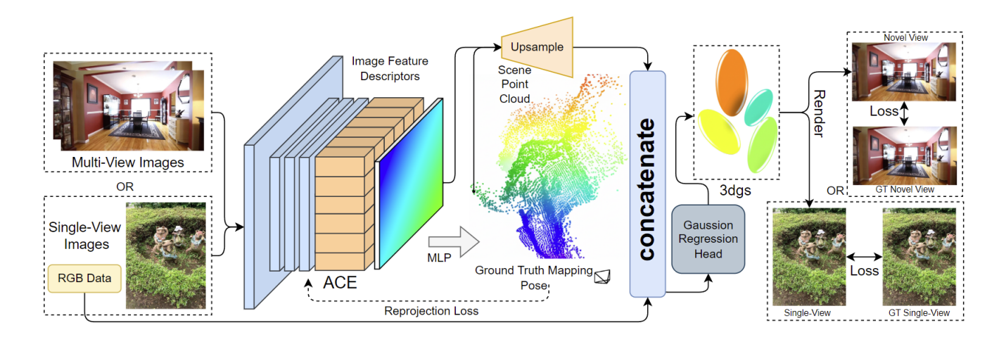
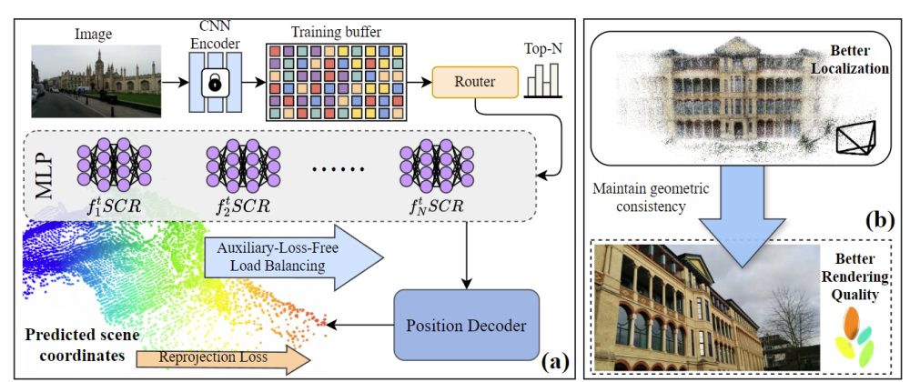
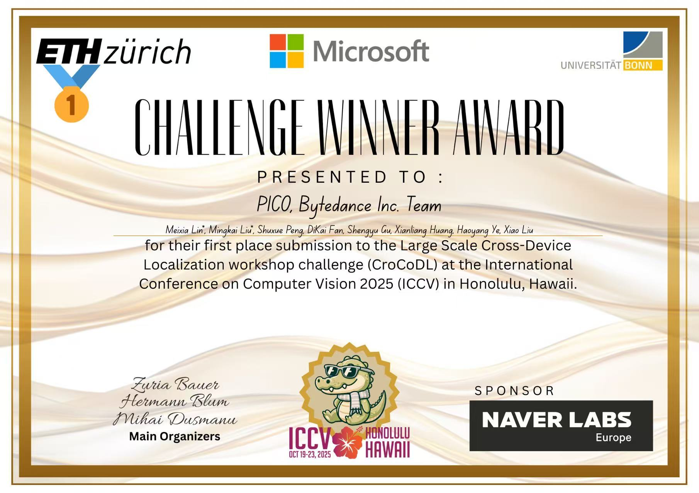
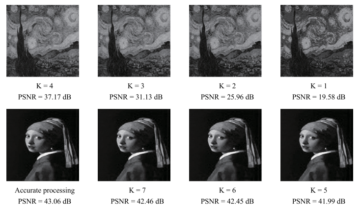
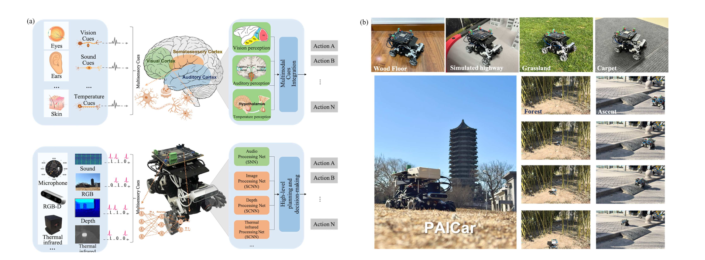

Academic Homepage
Biography
I’m a second-year Master’s student at Peking University, majoring in Integrated Circuit Engineering.
My research interests lie in 3D computer vision and deep learning, with a focus on 3D reconstruction, SLAM, and Robotics.
News
Publications- One paper accepted to IROS 2026.
- One paper accepted to ICRA 2026.
- One paper accepted to Science China Information Sciences.
- Winner, ICCV 2025 Cross-Device Image Localization Challenge.
- IROS 2025 Workshop AIR4D Best Paper Award.
- One paper accepted to IEEE Journal on Emerging and Selected Topics in Circuits and Systems.
Selected Publications
Full list
MACE: Mixture-of-Experts Accelerated Coordinate Encoding for Large-Scale Scene Localization and Rendering
ICRA 2026

Hybrid Cross-Device Localization via Neural Metric Learning and Feature Fusion
Winner, ICCV 2025 Cross-Device Image Localization Challenge

A selective bit dropping and encoding co-strategy in image processing for low-power design in DRAM and SRAM
IEEE Journal on Emerging and Selected Topics in Circuits and Systems

PAICar: a prototype of an embodied neuromorphic intelligent robot platform
Science China Information Sciences
Research Experience
Peking University
2023 - Present
Spiking neural network algorithm design and chip deployment.
Research Assistant, Sense Lab, Tsinghua University
2023 - 2026
Robot localization,Control, Embedded system design.
Research Intern, ByteDance, PICO
2025
3D Gaussian Splatting, Scene coordinate regression.
Visiting Student, MBZUAI
2026.06 - 2026.09
Streaming 3D feed-forward reconstruction.
Education
-
Expected 2027
M.S., Integrated Circuit Engineering
Peking University
-
2024
B.S., Electronic Information Science and Technology
Beijing Forestry University